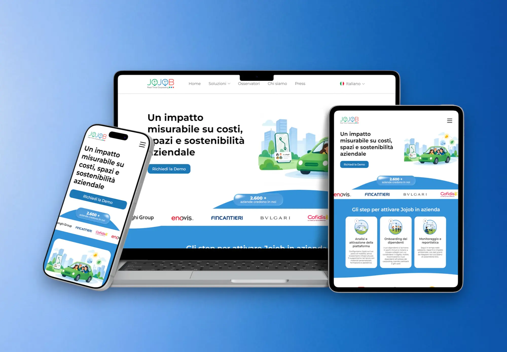
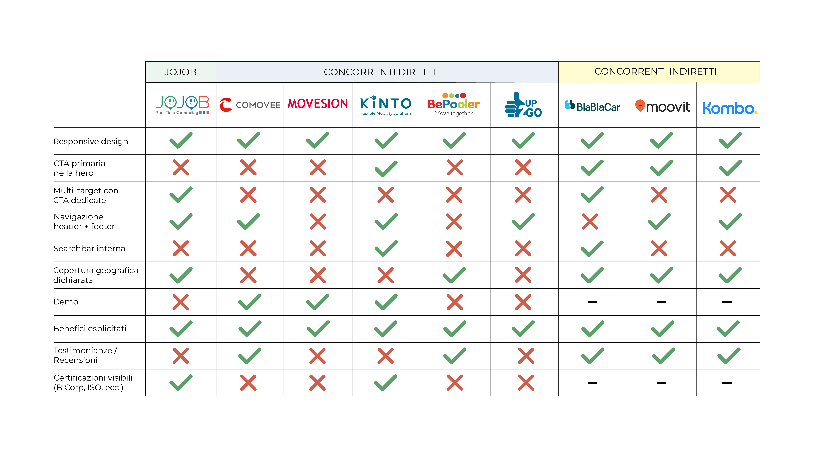
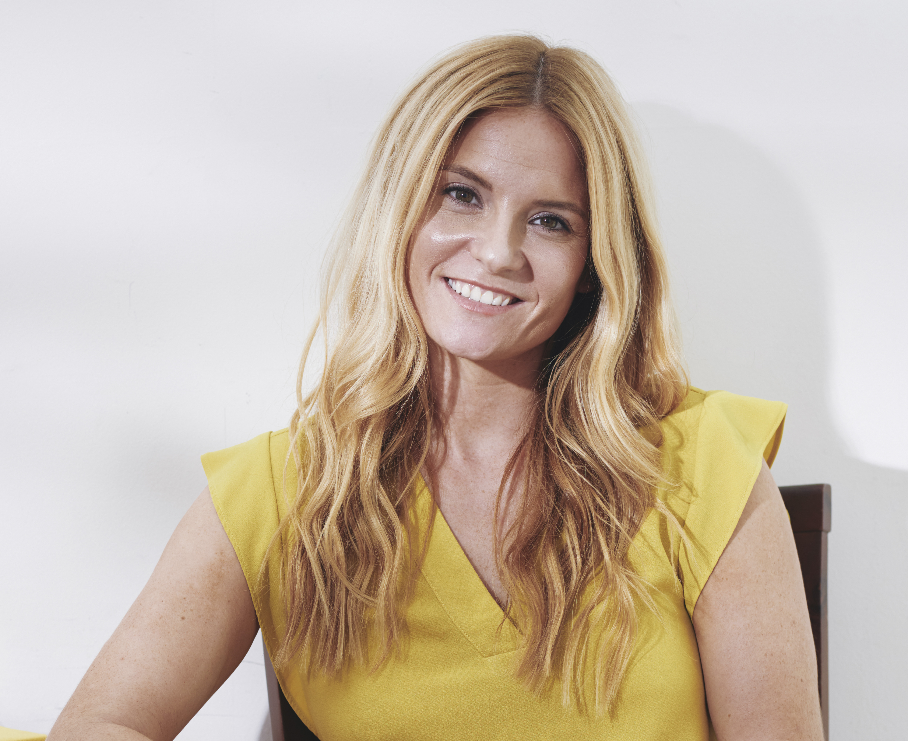
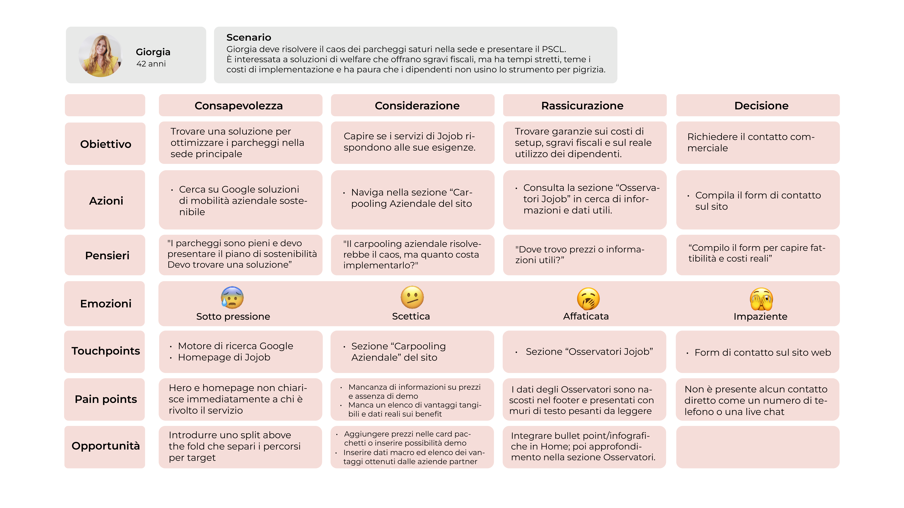
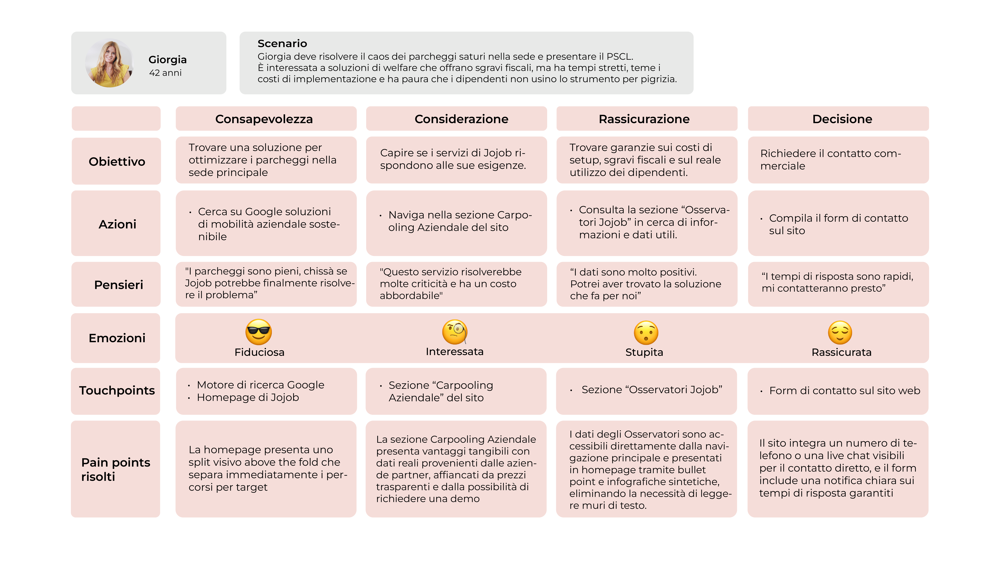
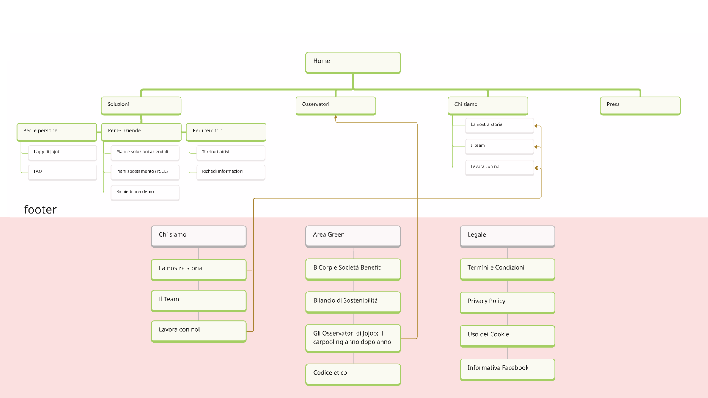
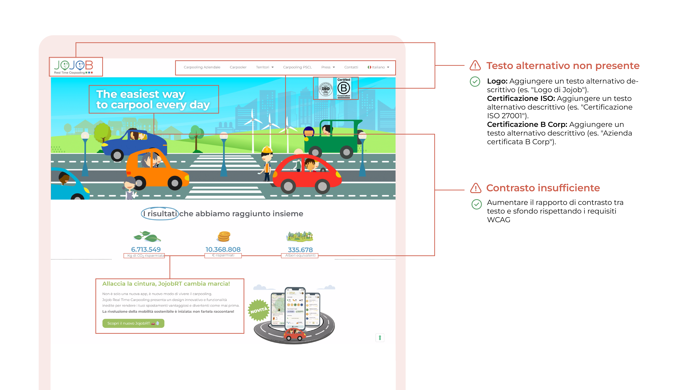

Contesto
Un unico sito si rivolge a chi vuole condividere il tragitto, a chi gestisce la mobilità aziendale e a chi cerca soluzioni per il proprio territorio.
UX/UI Redesign · Website Responsive · 2026
Tre pubblici, esigenze diverse. Un sito riprogettato per guidare persone, aziende e territori verso la soluzione di carpooling più adatta.

01 · Overview
Jojob promuove il carpooling casa-lavoro attraverso un’app per i pendolari e soluzioni dedicate ad aziende ed enti locali. Ho riprogettato il sito web per rendere più chiara l’offerta, facilitare l’orientamento e rispondere ai bisogni dei tre pubblici.
Un unico sito si rivolge a chi vuole condividere il tragitto, a chi gestisce la mobilità aziendale e a chi cerca soluzioni per il proprio territorio.
La gerarchia dei contenuti e i punti di accesso rendono poco immediata la scelta del percorso. Criticità di interazione e accessibilità aggiungono ostacoli alla navigazione.
Progettare percorsi riconoscibili e contenuti pertinenti per accompagnare ogni pubblico verso il download dell’app, la richiesta di una demo o un contatto informativo.
02 · Analisi As-Is
Ho analizzato il sito su desktop e mobile attraverso le 10 euristiche di Nielsen e i 5 principi di usabilità. Ho ricondotto le criticità a quattro aree di intervento: orientamento, visibilità delle azioni, coerenza delle interazioni e accessibilità.
Aziende e territori compaiono tardi nella homepage. La gerarchia dei contenuti rende poco immediato individuare il percorso adatto al proprio ruolo.
La hero non propone una CTA principale. Nel blocco dedicato all’app manca un collegamento diretto al download, aggiungendo passaggi al percorso.
Alcuni elementi decorativi sembrano pulsanti. Menu e form presentano comportamenti instabili su mobile, con errori e feedback non sempre chiari.
Contrasti insufficienti, testi alternativi mancanti e difficoltà di navigazione da tastiera ostacolano la lettura e l’utilizzo di alcuni contenuti.
03 · Benchmarking
Ho confrontato Jojob con otto concorrenti diretti e indiretti, analizzando navigazione, CTA, presentazione dell’offerta e contenuti di supporto. Dal confronto ho selezionato tre indicazioni utili al redesign.

Nel confronto, KINTO, BlaBlaCar, Moovit e Kombo presentano una CTA primaria nella hero. In Jojob questo punto di accesso è assente.
Per Jojob Offrire tre ingressi chiari già nella hero, uno per ciascun pubblico.
COMOVEE, MOVESION e KINTO propongono la possibilità di richiedere una demo, un’opzione non presente nel sito Jojob analizzato.
Per Jojob Rendere la richiesta di una demo un’azione riconoscibile e visibile.
COMOVEE, BePooler e BlaBlaCar includono testimonianze o recensioni, aggiungendo esperienze d’uso alla descrizione del servizio.
Per Jojob Affiancare ai benefici testimonianze e contenuti di rassicurazione.
04 · Ricerca utente
Ho costruito un questionario con domande chiuse e aperte, differenziando il percorso in base al ruolo del partecipante. L’obiettivo era esplorare abitudini di mobilità, aspettative e resistenze verso il carpooling.
Aziende · B2B
referenti senza una piattaforma non conoscevano soluzioni strutturate di carpooling.
Le risposte aperte riportano dubbi sui costi, sui tempi per l’implementazione e sull’effettiva partecipazione dei dipendenti.
Direzione progettuale Chiarire funzionamento, benefici e processo di adozione, con un accesso riconoscibile alla demo.
Persone · B2C
indicano il risparmio economico come leva principale per adottare il carpooling negli spostamenti casa-lavoro.
Nelle risposte aperte ricorrono il disagio della socialità forzata e il timore di non trovarsi bene con il compagno di viaggio.
Direzione progettuale Affiancare ai benefici economici una spiegazione chiara dell’app e contenuti su fiducia e autonomia.
05 · Personas e user journey
Ho sintetizzato questionario e ricerca documentale in tre personas, collegando obiettivi, ostacoli e informazioni necessarie alla scelta. Le journey hanno aiutato a individuare dove intervenire sul percorso.
Aziende · B2B

Responsabile HR
42 anni
Territori · B2G
Assessore alla mobilità
56 anni
Profilo esplorativo da validare con referenti istituzionali.
Persone · B2C
Addetto alla logistica
31 anni
Focus · Percorso aziende
Ho confrontato il percorso di Giorgia sul sito originale con lo scenario progettato: informazioni sull’offerta più chiare, dati più accessibili e un contatto commerciale più semplice da trovare. Il To-Be descrive l’esperienza prevista dalla riprogettazione.


06 · Architettura dell’informazione
Ho riorganizzato i contenuti per distinguere i percorsi di persone, aziende e territori e rendere più visibili i dati sul servizio. L’alberatura è stata affinata durante i wireframe, raccogliendo i tre percorsi sotto la voce “Soluzioni”.

Una voce comune raccoglie le sezioni per persone, aziende e territori. Ogni percorso propone contenuti dedicati: app e FAQ, piani aziendali e PSCL, oppure territori attivi.
I dati sul carpooling diventano accessibili da una voce autonoma, senza dover passare da “Press”. Un contenuto trasversale ai tre target supporta la valutazione del servizio.
“Richiedi una demo” per le aziende e “Richiedi informazioni” per i territori rendono esplicito il passo successivo. “Piani di spostamento (PSCL)” chiarisce il contenuto della sezione.
07 · Accessibilità
Ho analizzato cinque pagine del sito originale,
individuando problemi di contrasto, testi alternativi
mancanti, testo giustificato e link duplicati.

Ho poi riadattato le personas attraverso scenari ipotetici di accessibilità, per capire come le barriere potessero influire sui loro percorsi e ricavarne indicazioni progettuali.
Giorgia · Aziende
Scenario: ipovisione, uso dello zoom e supporto dello screen reader.
Barriere: contrasti deboli e informazioni visive prive di alternative testuali.
Direzione progettuale: migliorare i contrasti, descrivere le immagini informative e prevedere layout utilizzabili con testo ingrandito.
Giovanni · Territori
Scenario: limitazione motoria temporanea e navigazione da tastiera.
Barriere: link duplicati verso la stessa risorsa aggiungono passaggi inutili al percorso.
Direzione progettuale: unire icona ed etichetta in un unico collegamento e mantenere un ordine di navigazione logico.
Stefano · Persone
Scenario: dislessia lieve e maggiore fatica nella lettura di testi densi.
Barriere: testo giustificato e blocchi poco strutturati rendono più difficile seguire la lettura.
Direzione progettuale: allineare i testi a sinistra, usare paragrafi brevi e organizzare le FAQ per argomento.